← Back to Projects
02 • Sacred + Community
Al Noor Grand Mosque
A luminous sanctuary where sacred geometry, filtered light, reverence and community converge.
LIGHT BEFORE FORM
Design Narrative
The architecture begins with direction, light and silence before it begins with form.
The mosque is designed as a sequence of calm thresholds: from city to courtyard, from shade to filtered light, from movement to devotion.
Qibla axis, layered thresholds, domes, minarets, courtyards and rhythmic arcades.
Qibla-oriented spatial sequenceMain prayer hallWomen’s prayerAblution areasEducation / libraryShaded courtyards
Strategic Lens — Sacred Clarity
How can sacred geometry guide movement, community and reverence without losing contemporary clarity?
Organise the mosque around a legible qibla axis and calibrated thresholds of light, shade and gathering.
Domes, minarets, courtyards and arcades are composed as one sequence of orientation, calm and community.
A luminous progression from shaded courtyard to monumental prayer hall.
Spiritual identity is carried by proportion, light and orientation — not decoration alone.
Curated Visual Gallery
Al Noor Grand Mosque
A visual sequence of architecture, atmosphere, movement and detail.
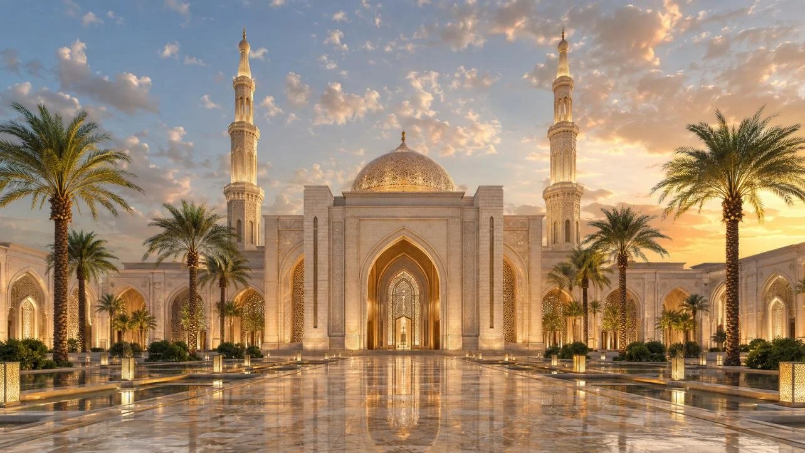
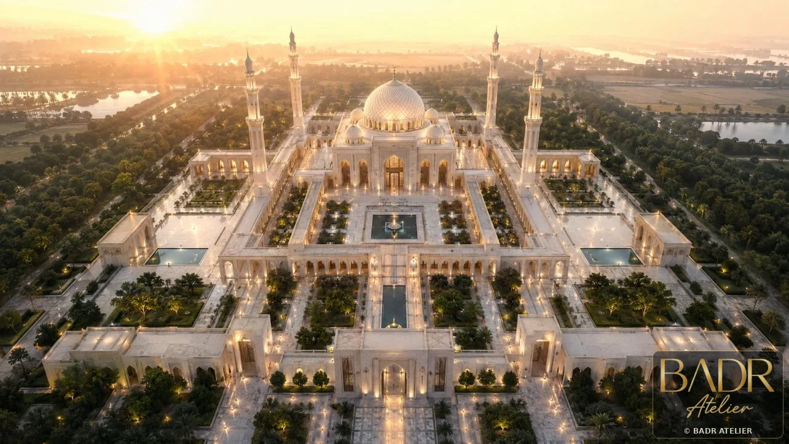
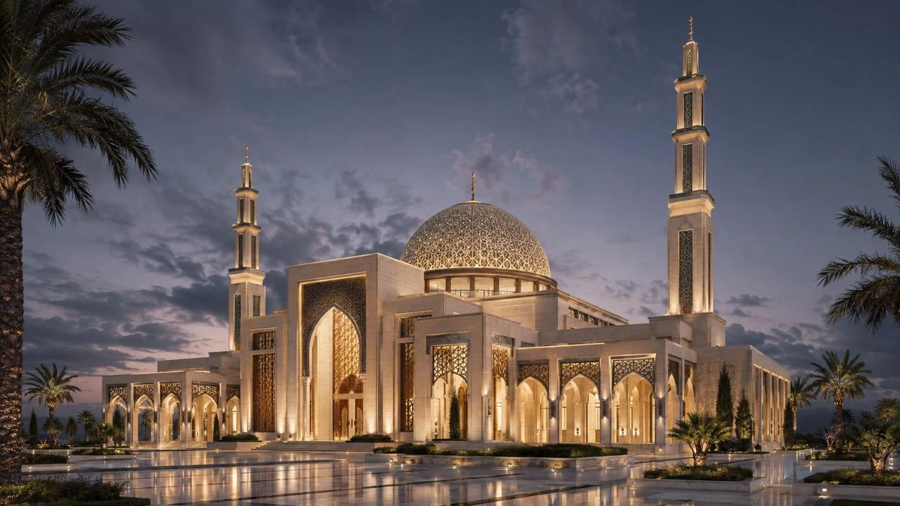
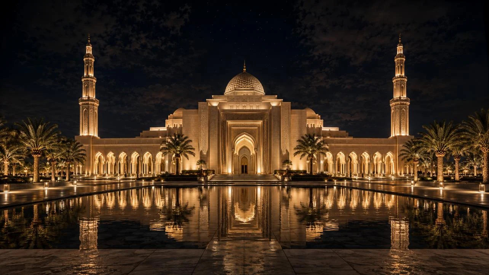
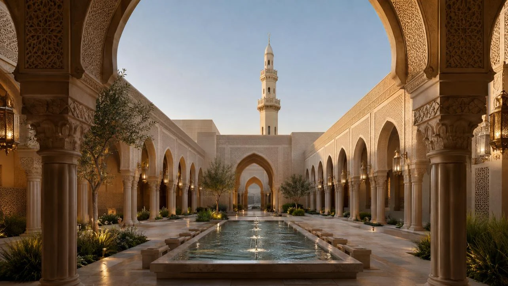
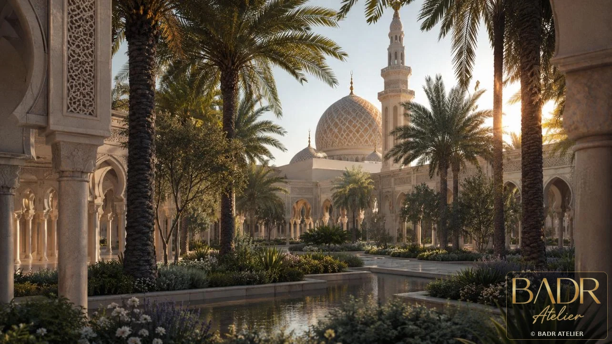
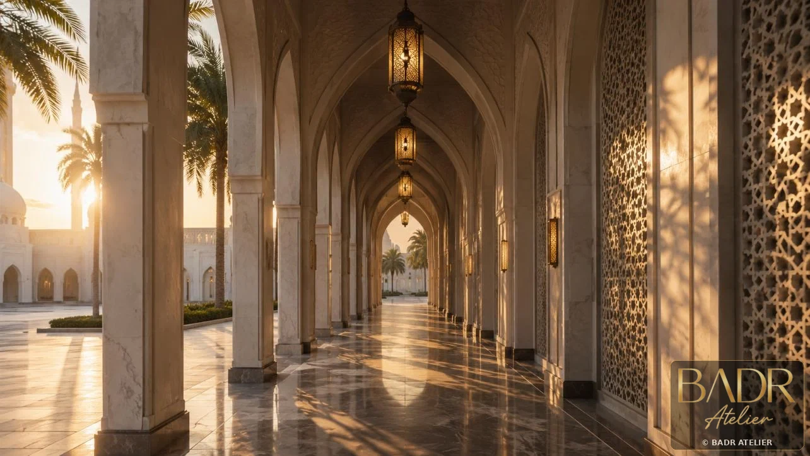
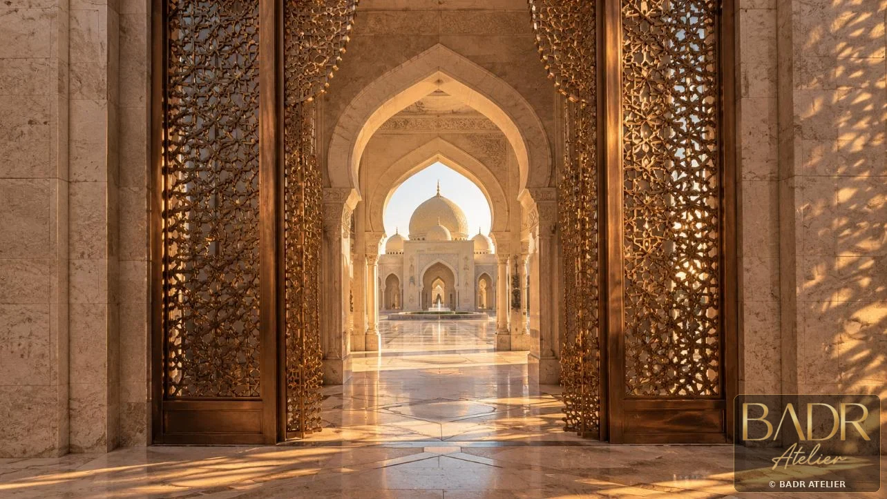
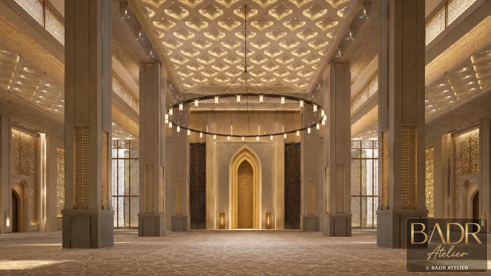
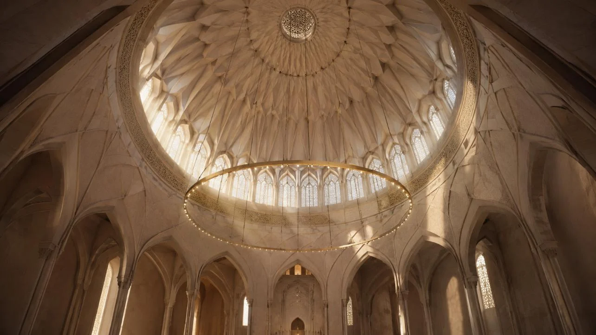
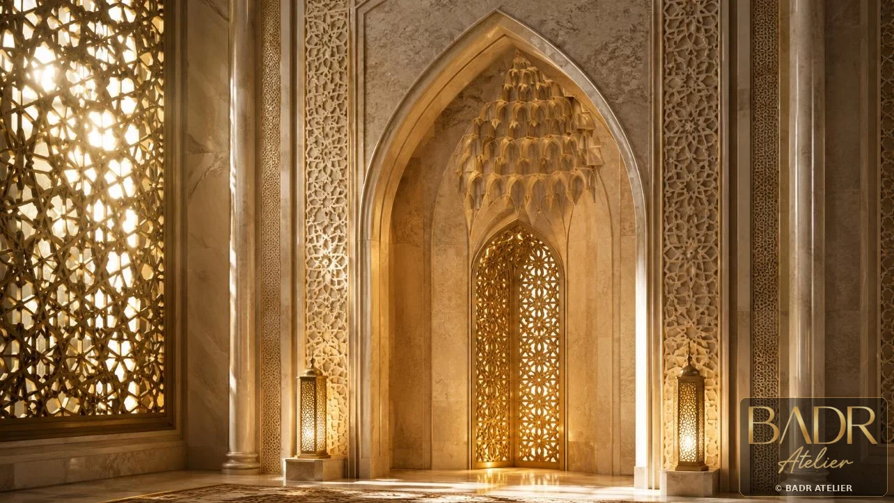
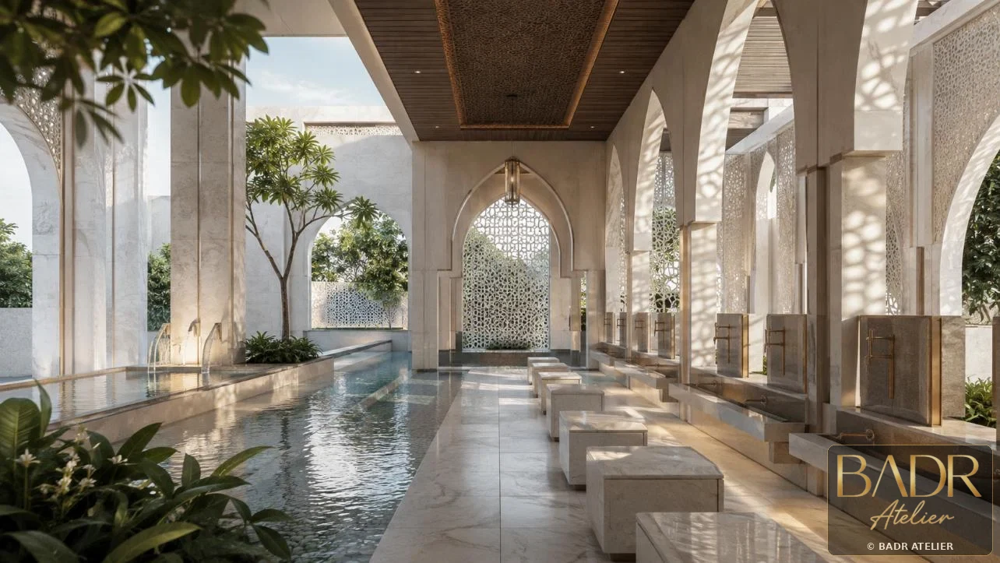
Key Features
- Qibla-oriented spatial sequence
- Main prayer hall
- Women’s prayer
- Ablution areas
- Education / library
- Shaded courtyards
- Minarets + landscape buffers
Spaces + Experiences
- Main prayer hall
- Women’s prayer area
- Ablution zones
- Entrance lobby
- Courtyards
- Learning spaces